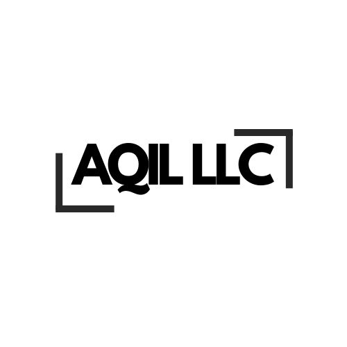
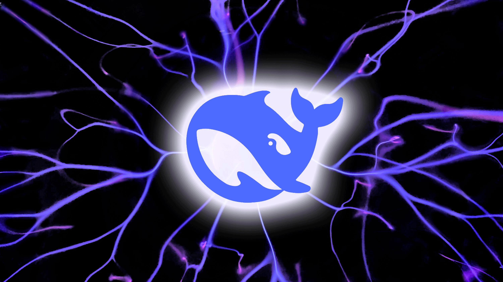
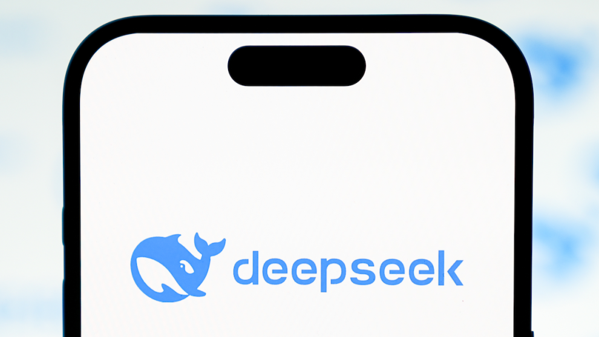
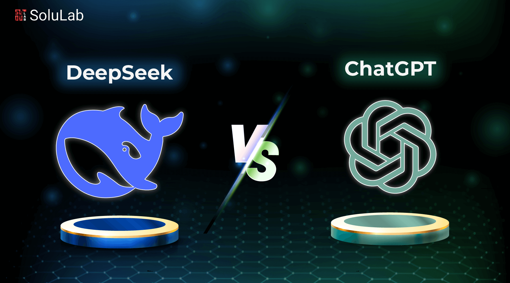
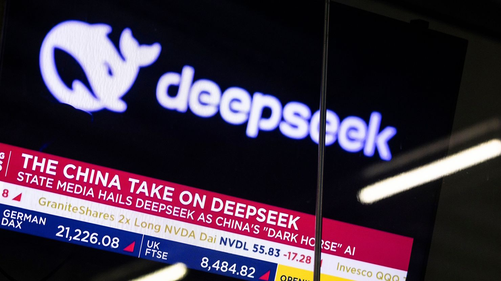
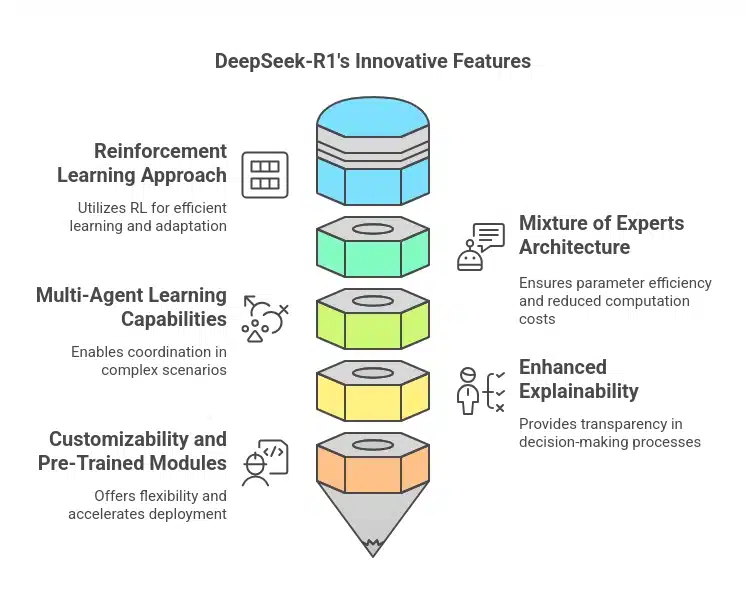
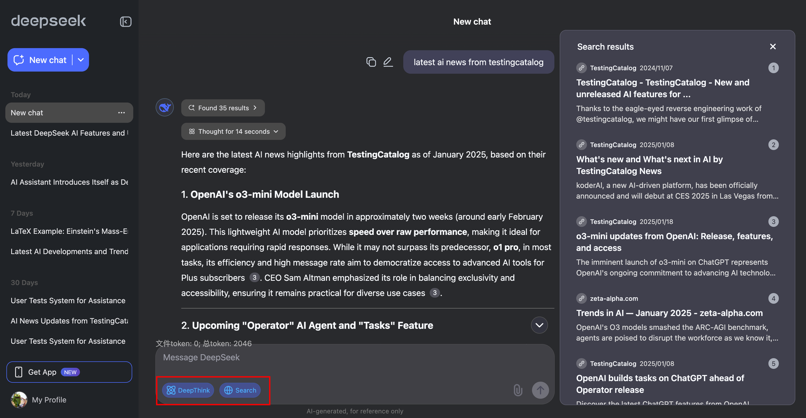

Deepseek - Süni İntellekt

DeepSeek, Çin mərkəzli inkişaf etdirilən və süni intellekt dünyasında inqilab edən bir model kimi fərqlənir. Rəqibləri ilə müqayisədə daha aşağı xərclə və az sayda çip istifadə edilərək hazırlanan bu model, ChatGPT kimi güclü süni intellekt sistemlərini geridə qoymağı bacardı. İstifadəçi dostu interfeysi ilə geniş bir auditoriyaya müraciət edən DeepSeek, App Store-da ən çox yüklənən süni intellekt asistanı kimi böyük maraq qazandı.


Şirkət 2023-cü ildə Liang Wenfeng tərəfindən Çinin cənub-şərqində yerləşən Hangzhou şəhərində təsis edilib.
ABŞ’nin ixrac qadağası qoymazdan əvvəl Liang’ın əlinə böyük miqdarda Nvidia A100 çip ehtiyatı keçdiyi bildirilir. Liang’ın bu çipləri daha ucuz və daha aşağı keyfiyyətli çiplərlə birləşdirərək DeepSeek’i qurmağı bacardığı qeyd edilir.

OpenAI’ın qurucusu Sam Altman, DeepSeek’in qiymət - performans baxımından təsirli bir versiya olduğunu qəbul edir.

Liang, "Biz sadəcə öz sürətimizi izləyir, xərcləri hesablayır və qiymətləri buna uyğun təyin edirdik" dedi. Liang, iyul 2024-cü ildə The China Academy’ə verdiyi bir müsahibədə süni intellekt modelinin əvvəlki versiyasına göstərilən reaksiyaya şaşdığını bildirdi və "Qiymətləndirmənin bu qədər həssas bir mövzu olacağını gözləmirdik" ifadələrini əlavə etdi.
Çin'in süni intellekt (AI) tətbiqi olan DeepSeek ilə bağlı detallar maraq doğurur. DeepSeek'in yüksəlişi qlobal çip nəhənglərini və texnologiya şirkətlərini sarsıdacaq qədər böyük oldu. Xüsusilə süni intellekt sektoruna investisiya edən şirkətlərin səhmlərində əhəmiyyətli enişlər qeydə alındı. Açıq mənbə kodlu olması bir çox inkişaf etdiricinin bu modeldən istifadə etməsinə və geniş yayılmasına şərait yaradır.

DeepSeek’in ən böyük uğuru, ABŞ tətbiq mağazalarında ən çox yüklənən süni intellekt tətbiqi olması oldu. DeepSeek’in pulsuz olması, OpenAI kimi ödənişli süni intellekt modellərinə qarşı böyük bir üstünlük təqdim edir. DeepSeek-R1-in xidmət göstərməyə başlamasından sonra şirkət, məhsulunun riyaziyyat və kodlaşdırma kimi sahələrdə ChatGPT istehsalçısı OpenAI’nin ən son modelləri ilə "bərabər performans" göstərdiyini açıqladı.
Yanvar ayında bazara çıxarılan Çin istehsalı DeepSeek AI tətbiqi, ChatGPT və digər rəqiblərini geridə qoyaraq ABŞ, İngiltərə və Çin’də Apple cihazlarında ən çox yüklənən pulsuz tətbiq oldu. DeepSeek, güclü təbii dil emalı (NLP) texnologiyası ilə mətn əsaslı sualları təhlil edir və sürətlə dəqiq, mənalı cavablar yaradır.
- 📌 İnkişaf Prosesi: 2 min Nvidia çipi istifadə edilərək, təxminən 5,6 milyon dollar xərclə yaradıldı.
- 📌 Rəqiblərinə Nisbətən Üstünlüyü: Daha qısa müddətdə, daha aşağı xərclə və daha az çip istifadə edilərək inkişaf etdirildi.
- 📌 Fərqləndirici Xüsusiyyəti: Açıq mənbə kodlu olması və pulsuz giriş təqdim etməsi.

DeepSeek’in açıq mənbəli modelinin 6 milyon dollardan daha az bir xərclə inkişaf etdirildiyi bildirilir. Bu, sadəcə keçən ilki xərcləri 5 milyard dollar olan ChatGPT kimi rəqiblərinin sərf etdiyi məbləğlə müqayisədə olduqca azdır.
Şirkətin bu qədər kiçik bir xərc açıqlaması müstəqil mənbələr tərəfindən təsdiqlənməyib, lakin yaratdığı təsirlər ABŞ’də böyük texnologiya şirkətləri bazarını sarsıtdı.

DeepSeek-R1-in xidmət göstərməyə başlamasından sonra şirkət, məhsulunun riyaziyyat və kodlaşdırma kimi sahələrdə ChatGPT istehsalçısı OpenAI’nin ən son modelləri ilə "bərabər performans" göstərdiyini açıqladı.
